Having lived in Boston (Somerville, to be specific) for two years (six if you count college and the “Boston area”), a blog post is long overdue. I just never really thought about making a travel blog post on the city you live in! While the pandemic hit a year in, I discovered some new, lesser-known places and more outdoor spaces during my two years here. Living in Los Angeles now, I totally miss all the parks and green space and the abundance of lakes and rivers in Cambridge/Boston, the options for going on runs, the walkability of the city (hour-long walks become the norm!), and the ease of public transportation around the city (while I didn’t have a car and lived a 30-minute walk from the nearest T stop, I became quite familiar with the streets. I usually biked to work—BlueBikes is a popular bike share program that’s basically all over town and pretty convenient and easy to use!). While Boston is known for being a college town, it is also a great place for young adults and beyond— there’s such a diversity of things to do, whether you’re a nature lover, history buff, arts critic, sports fan, or foodie! There’s always something to do and something new to try.
To Do
Cambridge/Somerville
- Mount Auburn Cemetery: a gorgeous, beautiful, and tranquil must-visit expanse of green
- Fresh Pond: this lake/reservoir was near my work so I would go running around it frequently!
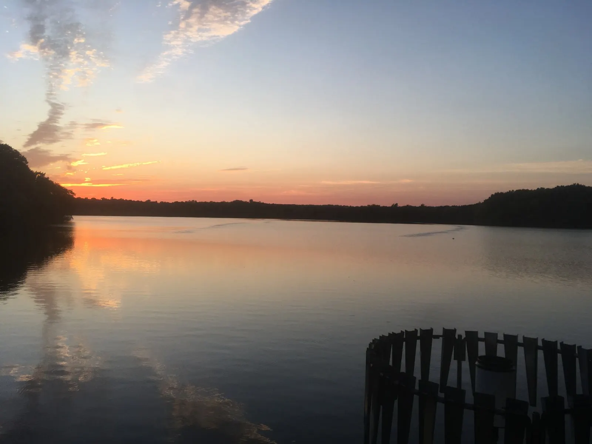
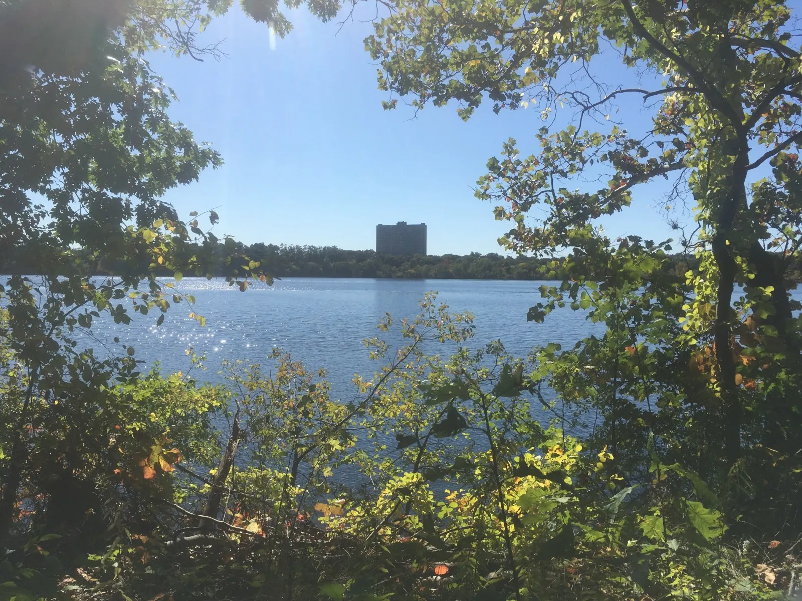
- Harvard Square/Cambridge Common: one of the few places that always seemed busy, even during the pandemic. Great place to hang out, eat, study, check out a bar, and explore a plant store! Sometimes there’s music playing. Harvard also has a couple museums open to the public
- Central Square: great food and vibes
- Somerville Bike Path: my refuge during the pandemic – ran/biked here a lot! I would run from the east entrance of the bike path on Lowell St to the Alewife Brook Reservation (pictured below) and back, or bike to Arlington
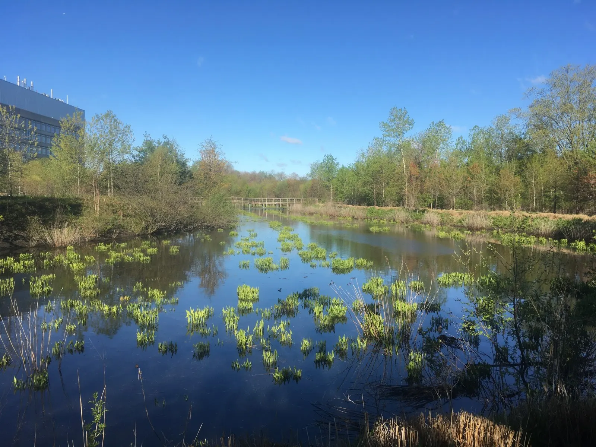
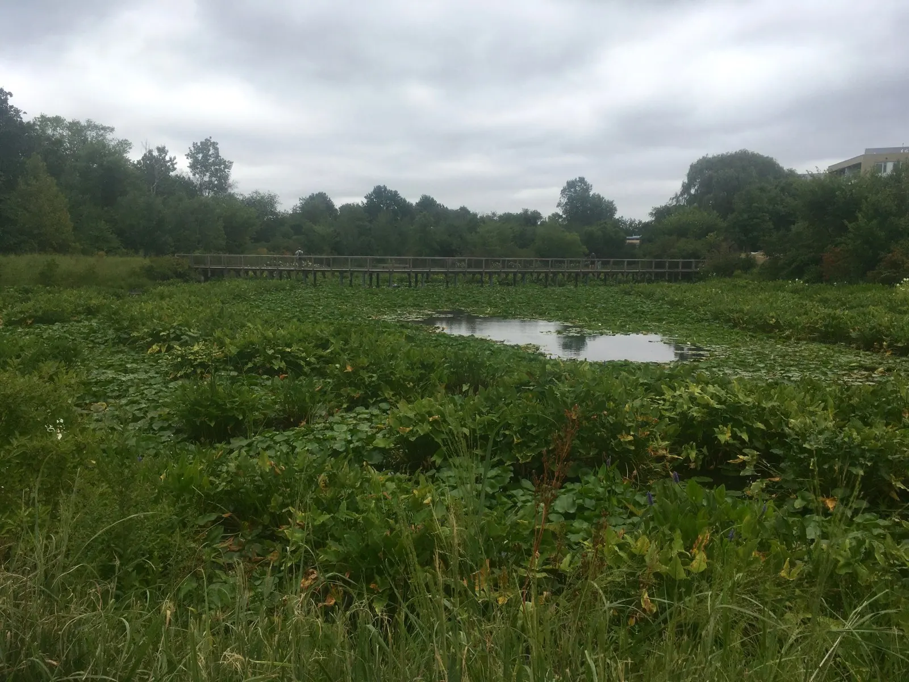
- Assembly Row/Mystic River: an outlet mall that I hear has developed significantly since the pandemic. My roommate and I would used to go for Trader Joe’s and TJ Maxx! Also a great place to go for a run – I would either jog along the Mystic River in the Mystic River State Reservation, or cross the Sylvester Baxter Riverfront Park, go behind Assembly Row along the Orange Line, and run all the way to the end before it reunited with Mystic Ave.
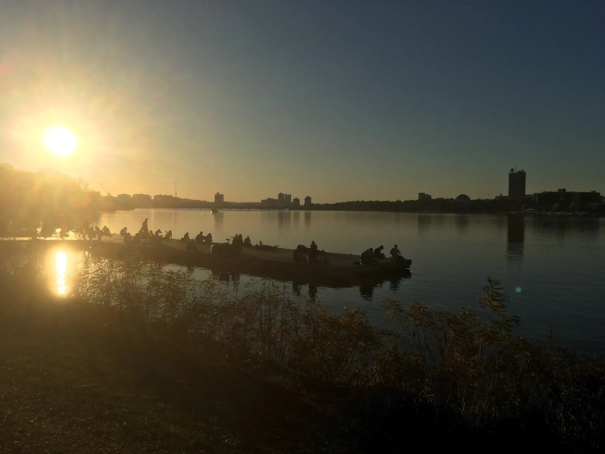
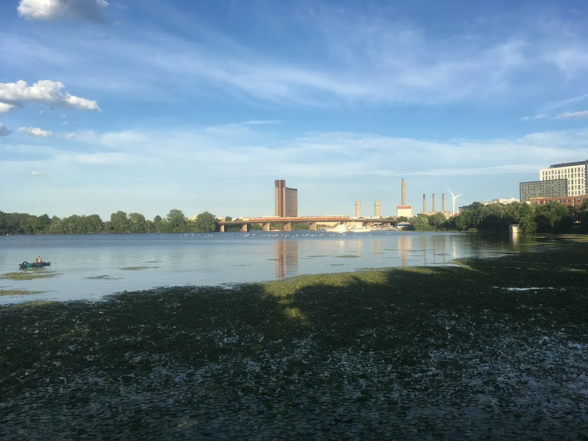
- Middlesex Fells Reservation: hiking trails right outside Somerville, just a bike ride or short Uber ride away! The Skyline Loop trail is a moderate to difficult 7.7-mile loop hike around the reservation (budget around 3.5 hours), with various ascents and descents. It’s a very shaded, gorgeously green and lush trail during the spring and summer months, you’ll see a reservoir and various small creeks, making for a convenient and welcoming retreat from the city life.
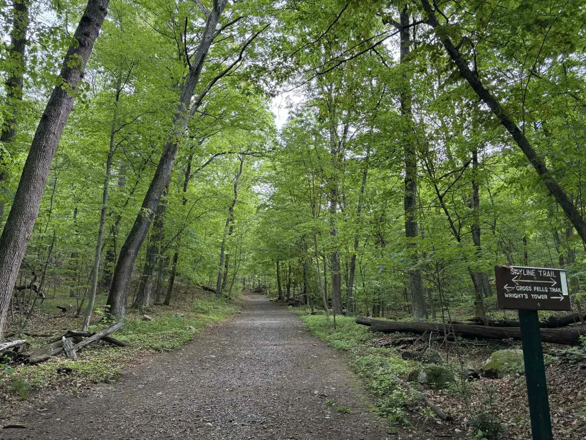
- Prospect Hill Monument: a fort tower a 15-minute walk away from the apartment where I used to live in Somerville. In 1776, George Washington ordered the raising of the first true American flag here. It was also the site of American fortifications during the Revolutionary War – which makes sense, since it has a great panoramic view of Cambridge/Boston! Since discovering it with my roommate during a sunrise walk during the pandemic, I revisited it many more times, at all times of the day.
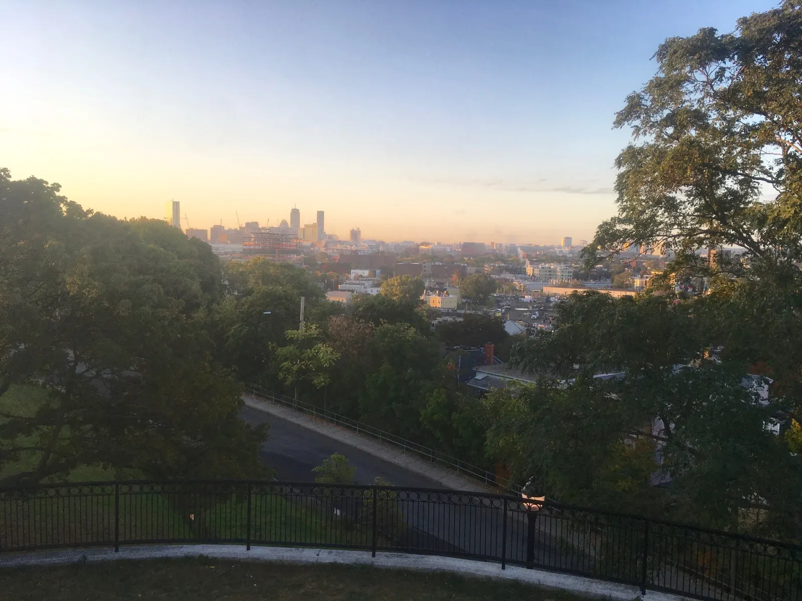
- PorchFest: I didn’t get to experience this because pandemic, but it’s a cool informal event that happens every summer where musicians and bands perform on their porches!
- Somerville Fluff Festival: Also didn’t get to experience this, but it takes place every September in Union Square. It’s a celebration of Marshmallow Fluff, the gooey, spreadable treat which was first sold in Somerville in 1917 by Archibald Query, who whipped up batches in his kitchen and sold it door to door. In 1920, Query sold the recipe to H. Allen Durkee and Fred L. Mower, and they built their own company in Lynn, where Fluff is still produced to this day. Over the years, it has remained a New England favorite, with families often serving up Fluffernutter sandwiches — Fluff and peanut butter slathered on white bread — or using Fluff in recipes for cakes, pies, candies, frostings, and fudge. Sounds sweet!
Boston
Generally, the whole downtown area of Boston is the quintessential place to see “Boston,” with much of the touristy must-see places here. I’ve been to the area many times in all four seasons and it doesn’t get old!
- Boston Common / Boston Public Garden: Probably my favorite place in all of Boston. In the warmer months it’s especially beautiful, with the flowers in full bloom, the place lively and full of energy, everything lush and green.
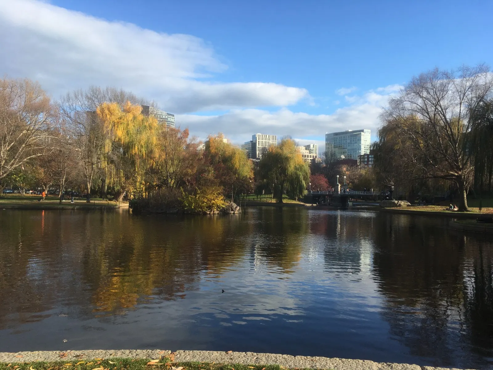
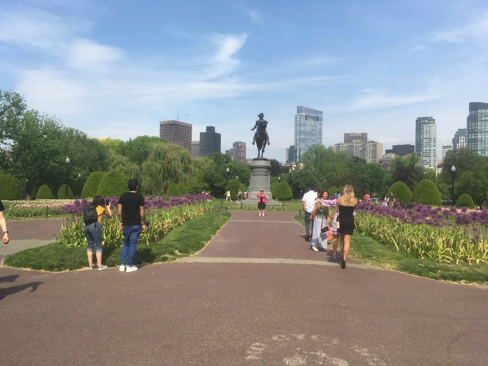
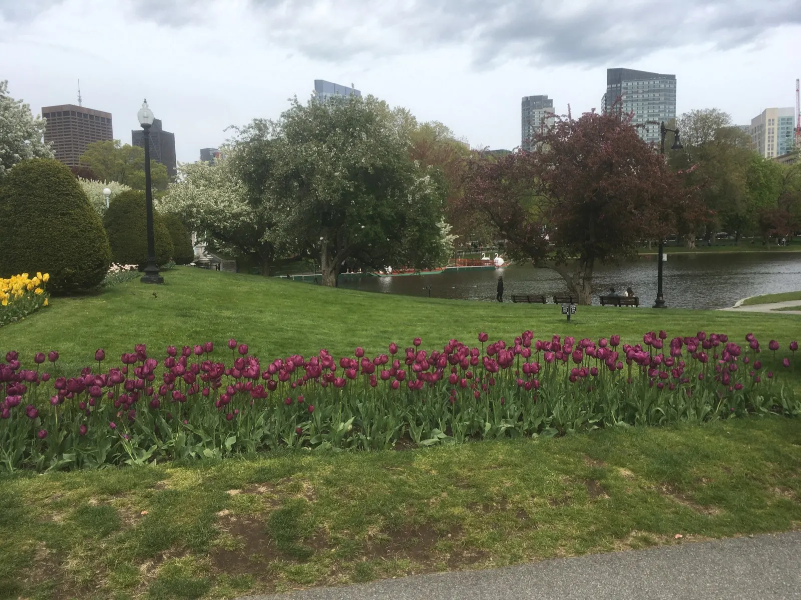
- Freedom Trail: A tourist must-do. You can follow the brick line on the ground, a 2.5-mile-long path through Boston that passes by 16 landmarks significant to US history, starting in Boston Common, going through the North End and ending at the Bunker Hill Monument. I love the old-fashioned feel of the Freedom Trail that makes you feel like you’re a part of history.
- Christopher Columbus Waterfront Park: beautiful port views and place to nap or read a book
- Beacon Hill: old-fashioned street lamps, cobblestone streets…all the fun Boston vibes
- Newbury Street: lots of good restaurants and cute, bougie shops
- Farmers markets: Be sure to check out the indoor Boston Public Market and the Haymarket right outside, which is pretty large (and often crowded) and has amazingly cheap produce. There are also several farmers markets throughout Cambridge and Boston, such as in Union Square, Central Square, and Copley Square.
- Museums: ICA, MFA, Museum of Science, Isabelle Stewart Gardner Museum
- Kayaking / sailing on the Charles
- Seaport: super bougie area by the port. Cool glowing swings at night
- Revere Beach / Castle Island
- Boston Symphony Orchestra (BSO): promo code 20UNDER40 (this may be outdated tho)
- Berklee College of Music: Hear they have amazing free/discounted performances!
- Constitution Beach: Not the nicest beach ever – it’s pretty small and you could see Logan Airport from it so there would often be planes flying overhead. But it’s close to the city and accessible by the T, so if you need a quick beach getaway this place does the trick
- TD Garden/Fenway Park: Watch a Boston Celtics or Boston Red Sox game!
Outside Boston
- Honey Pot Hill Orchards: apple picking, pumpkins, and an outdoor maze!
- Walden Pond: beautiful, peaceful lake in Concord where Henry David Thoreau (author of Walden) lived in a cabin for 2 years and went on walks with Ralph Waldo Emerson
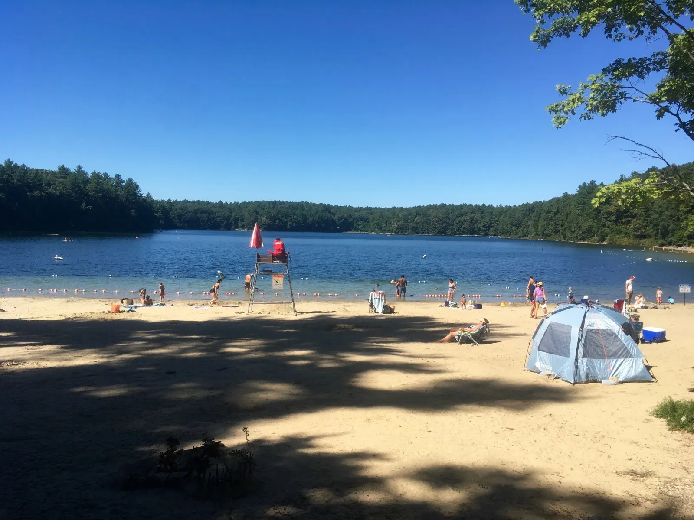
- Lexington and Concord: loved the small town feel, and of course the historic significance. In Lexington you can visit the Lexington Battle Green, a public park and National Historic Landmark where the first shots of the battle of Lexington and Concord were fired in 1775, an event that would start the Revolutionary War. In Concord there’s the Louisa May Alcott House where Little Women was written, and the Minute Man National Historic Park commemorating the beginning of the Revolutionary War – there’s the North Bridge, where the militia fired back at the British troops, and the Battle Road Trail with a Paul Revere monument.
- Blue Hills Reservation: From the summit of the Great Blue Hill, you can see over the entire metropolitan area. Just a 30 minute drive from Boston but far enough away to escape the bustle of the city life. Reminds you how much greenery there is around Boston!
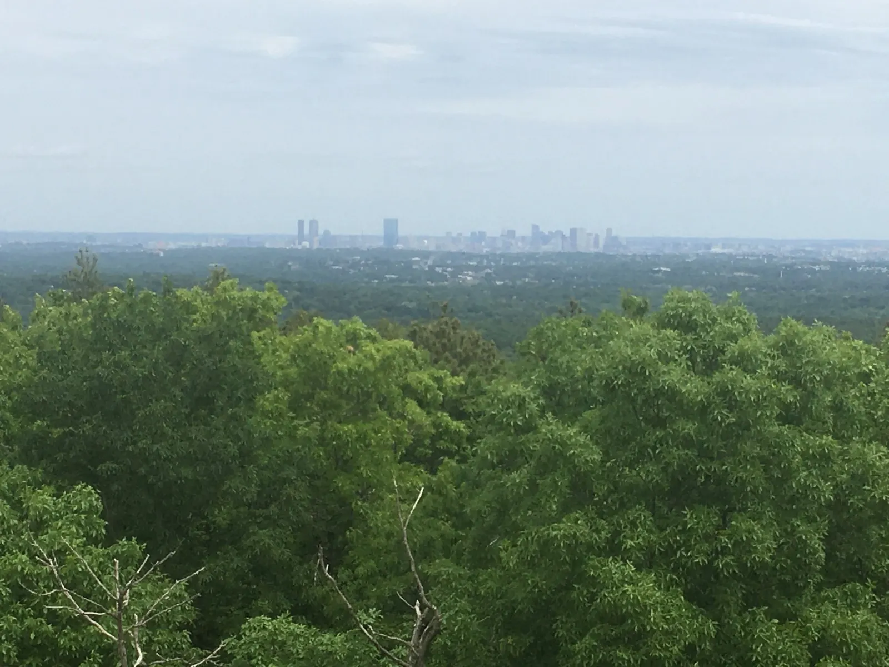
- Newton: cute town with a decent shopping mall
- Salem: known for its 1692 witch trials – visit if you’re looking for some eerie spooky vibes~
- Crane Beach: heard amazing things about this beach, though have to reserve in advance and purchase a day pass
- Cape Cod: Beautiful island for nature, hiking, and beaches. Would not recommend going in the winter though – I went during Thanksgiving and it was 30ºF and all the trees were bare – not quite beach weather haha
- Martha’s Vineyard: Also not my lucky day with the weather – it was cold and rainy most of my trip! But it was still very beautiful and I guess the flip side is that it was less crowded. Some recs:
- Tisbury: West Chop Lighthouse, The Net Result (great lobster + sides)
- Oak Bluffs: Gingerbread Houses, Cottage Museum (cute cottage homes), Juice By the Sea (great smoothies, snacks and fast meals to take to go), Inkwell Beach, Back Door Donuts (amazing donuts), East Chop Lighthouse (for the views)
- Vineyard Haven: Island Alpaca Company (didn’t make it here but it’s an alpaca farm!)
- West Tisbury: was recommended State Road Restaurant (Farm to Table)
- Edgartown: The Seafood Shanty (amazing oysters), Morning Glory Farm (berry picking)
- Providence, RI: an underrated city just an hour’s drive away
- White Mountains: about a 2.5-hr drive from Boston. Some of the best hiking you can find around here!
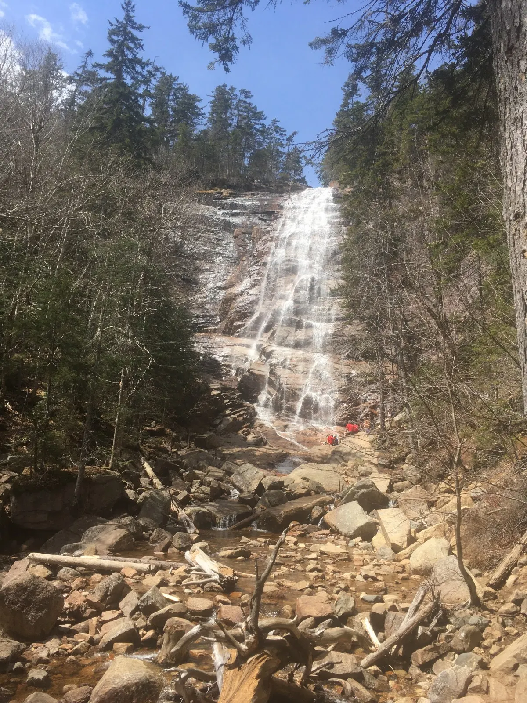
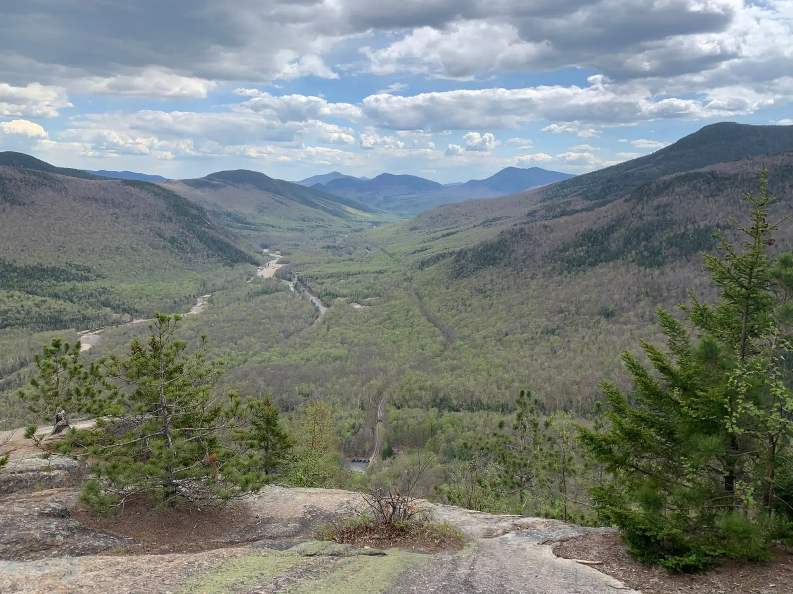
To Eat
Generally speaking, you can find good Asian food in Chinatown (downtown) and Allston. Porter Square/Davis Square are also worth checking out. Harvard Square and Central Square of course have good food, and I just loved the vibe there. North End is where you can find the best Italian food. Downtown area is the place to get your fix of clam chowder and lobster rolls. Newbury St is especially lively on the weekends, full of both casual and higher-end food. Just explore and see what new food places you might discover!
- Grocery stores: Market Basket is the most affordable grocery store I’ve seen in Boston (there’s one in Somerville). Star Market is pretty affordable too. Wegman’s is the high-end grocery store
- Bakeries/cafes/coffee shops: Flour Bakery (excellent pastries and brunch), Tatte Bakery, Thinking Cup (cozy coffee shop), Life Alive, When Pigs Fly Breads (Somerville – apparently they have amazing bread and I wish I came here. Try their chocolate bread!)
- American: 3 little figs (cute cafe), The Friendly Toast, Mr Crepe, Highland Kitchen, The Salty Pig, Max Brenner
- African: Sheger (Ethiopian), Suya Joint (Nigerian), Karibe (Ugandan)
- Asian:
- Allston: Seoul Soulongtang, Kaju Tofu House, Streetfood Revolution, Spring Shabu Shabu (hotpot), Naksan (Korean BBQ), Pho Viet (pho place with great Bun Bo Hue – spicy beef noodle soup)
- Chinatown: Hei La Moon (dim sum with the carts), Winsor, Taiwan Cafe, Double Chin (huge portions), Nine Tastes (Thai), Hong Kong Eatery, Wen’s Ramen, 5 Spices House, Liuyishou Hotpot, Happy Lamb Hotpot
- Back Bay/Fenway: Saigon Fusion (delicious, homely aromatic pho)
- Porter/Davis/Central/Harvard/Kendall Square: Yume Ga Arukara (udon), Nu Do Society, Shanghai Fresh (go for the xiaolongbao), Dumpling House, Thelonnius Monkfish (sushi), Dakzen (Thai), What A Soup (a cute Thai restaurant in Central Square with decent noodle soup, though I was most impressed by the pandan drink – a light, sweet, and refreshing drink made with pandan leaves – perfect for after a long hike), Martsa (Tibetan, decent momos), Bonchon (Korean fried chicken), Happy Lamb Hotpot, Sumiao Hunan Kitchen
- Haitian: Highland Creole Cuisine
- Mexican/Spanish: La Posada (our go-to place for cheap and delicious pupusas), Taco Loco, Celeste, Felipe’s (Harvard Square), Barcelona Wine Bar (tapas), Dali (tapas), Little Donkey, Tenoch Mexican (try their lengua tacos), Taco Party (vegan tacos), Machu Picchu (Peruvian)
- Indian: Punjabi Dhaba, Masala Square, Kashmir
- Mediterranean: Sarma
- Turkish: Oleana (Turkish fusion), Sofra (Turkish bakery/cafe)
- Boba (ranked according to my boba-loving friend):
- Kung Fu / Tiger Sugar / Ten One Teahouse – best boba
- Royal Tea – best aromatic tea and cheese tea
- Gong Cha – best milk tea
- Italian: North End is the neighborhood known for authentic Italian food. For dinner, try Rabia’s Dolce Fumo (delicious oysters and Italian food, and generous seafood portions – try the linguini with clams, with white wine!), Trattoria il panino, Antico forno (pizza), or Piattini (on Newbury St). For yummy cannolis, head to Modern Pastry, Mike’s Pastry, or Bova’s Bakery (a local favorite with various sweet treats. Their lobster roll is a must-try – it’s a crispy croissant with fluffy ricotta filling that’s not too sweet. Also try the Boston creme donut – it has a similar creamy ricotta filling that is delicious. The ricotta pie is good too (trust me you’ll want to try many items once you get inside) – expect to wait in line at any of these places during popular hours! For delicious authentic-tasting gelato, try TABLE Caffé (I loved the pistachio, tangerine, and passion fruit!).
- Seafood: Crab or lobster roll at Quincy Market (my go-to Boston treat), The Barking Crab, Legal Sea Foods, Island Creek Oyster Bar, Atlantic Fish Company
- Dessert: Union Square Donuts (Bow Market generally is a cool outdoor food area, it’s also now in multiple locations), Honeycomb Creamery, Amorino (gelato), Lady M (light matcha cake or cheesecake), Hi B3ar Ice Cream Roll, Veggie Galaxy, Taza Chocolate Factory (do the tour!), Maiko Matcha Cafe (ube and matcha soft-serve ice cream in Fenway)
- Drinks: Downeast Cider, Lamplighter Brewing Co, Beehive (jazz bar downtown), Winter Hill Brewing Company (don’t think I actually went here but it seemed like it was always poppin’!)